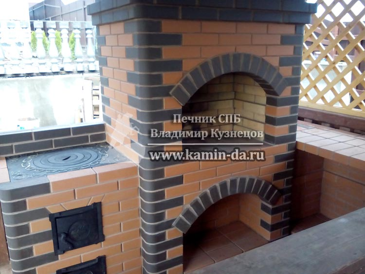

Кладка уличной печи из кирпича (Кирпичного мангала) в СПБ и Лен Области

Уличная печь с кирпичным мангалом - это очень распространенная задача для меня в летнее время года. Одна спрос на эти услуги растет ,и уже несколько лет я заканчиваю сезон в холодное время года, в ноябре. В этой статье мы подробно остановимся а особенностях кладки уличной печи мангала, а также разберем типовые функциональные секции печи мангала.
Уличная печь мангал из кирпича
В данной статье мы будем рассматривать примеры на тему уличных печей мангалов, какие бывают кирпичные мангалы, а также рекомендации заказчику по составлению Технического задания для печника.
В современном Петербурге огромный выбор мангалов для дачи: представлены как стационарные конструкции, так и переносные. И я уже не говорю о маленьких железных мангалах, которые прогорают через пару месяцев использования и превращаются в погнутую "консервную банку". Но в рамках этой статьи мы будем рассматривать самые популярные и долговечные стационарные кирпичные мангалы (или как их иначе называют, печи барбекю ).
Кирпичный мангал в Санкт-Петербурге
Для начала я бы хотел продемонстрировать вам свою недавнюю работу, уличный кирпичный мангал, в состав которого входят две секции : непосредственно мангал и печь под казан. Работа № 5, на фото также - я собственной персоной.
Итак, кладка уличной печи мангала из кирпича - одна из самых ответственных строительных работ. Большинство заказчиков наивно предполагают, что кирпичная печь мангал - гораздо проще, чем отопительная печь из кирпича. Ведь в печке, со слов заказчика, который якобы в строительстве не первый год, множество каналов, а вот для кладки комплекса не неужно никаких каналов для отопления.
Конечно же, я не буду оспаривать, что строительство той же отопительно-варочной печи Шведки - процесс сложный и ответственный. Дело в том, что работа по отведению отходов горения должна быть выполнена на высшем уровне.
Но вот лично для меня, как и для любого печника СПБ, строить отопительные печи с закрытой топкой гораздо легче, чем открытые зоны уличного мангала из кирпича. Ведь основная ценность печи мангала совсем не в том, чтобы просто приготовить шашлык. Если бы задача состояла только в этом, но вам достаточно было бы двух кирпичей, поставленных друг напротив друга прямо на земле! А между этими кирпича - насыпать угли. Вот вам и мангал. Но все гораздо тоньше.
Основное преимущество любой загородной уличного кирпичного мангала в том, что он позволяет готовить мясо на углях в любую погоду и отводит весь дым от человека, который готовит шашлык. Это очень важно! Ведь, если дым будет валить вам в лицо из этой печи мангала, то какой смысл в этой огромной махине, в которую вложены деньги, но при этом она не отрабатывает своё?
В моей работе № 5, которая была показана выше - комплекс установлен в крытой беседке. И неправильно построенный в кирпичном мангале каминный зуб будет давать задымление прямо в беседку.
Но это ещё пол беды - предыдущая работа была в принципе на открытом воздухе, и удаление дыма может быть более быстрым засчет естественной вентиляции и ветра. А вот на следующей работе я строил уличную печь мангал из кирпича в 100% закрытом помещении. Установленные окна, двери позволяют быстро натапливать такую беседку зимой. И поэтому в таком случае очень важно, чтобы печник выложился на все 100% при кладке такой печи мангала. Работа № 16, в Данный комплекс входит столешница, мини-русская печь, кирпичный мангал и казан.
Мангал из кирпича: Цена в Санкт-Петербурге
Далее хотелось бы обсудить ценообразование на уличные печи и манаглы из кирпича. Конечно же, я понимаю тех заказчиков, которые звонят и спрашивают "в лоб" : "Мне нужен мангал, какая у вас цена на уличную печь мангал из кирпича?" Сразу скажу, что ответить на такой вопрос одной цифрой очень тяжело. Но я уже определил для себя, что такие заказчики, которые начинают диалог с цены никогда не продолжают со мной разговор, если я называю цену. И доходит до смешного: какую бы цену я не называл, они все равно говорят : "Спасибо, мы подумаем".
Конечно же, говорить, что цена в кладке печи мангала - вовсе не важна, а важно качество обьекта, который вы получите на выходе - это лукавство. Вопрос денег непременно должен обсуждаться! И более того, я сторонник прозрачных цен. После того, как мы с вами определимся с задачей, что именно вы понимаете под "Мангал из кирпича" и какой комплекс в своем воображении вы нарисовали - я смогу оценить такую задачу прямо по телефону. И вот если эта цена кирпичного мангала вас устроит, то тогда нам имеет смысл с вами встречаться на вашем объекте, обсуждать точное расположение, размеры и вид материалов, из которого я буду выполнять строительство.
Более того, приблизительные цены на все свои объекты я публикую на этом сайте, и приблизительную оценку своей задаче вы сможете дать сами, даже не выполняя телефонный звонок. Вот, к примеру, самая типовая задача , кирпичный мангал с казаном, выполнено из коричневого кирпича, работа № 24. Цену на эту работу смотрите сразу же после этой статье, в нижней части страницы, в небольшом каталоге работ по уличным печам с мангалом. Фото № 24
Иногда мне становиться смешно от того, как заказчики описывают моих коллег по цеху. Многие печники не говорят цену на уличные печи мангалы из кирпича и не выкладывают её не под каким предлогом на сайте. Цена, якобы, дается по запросу. И многие заходят ещё дальше: даже по телефону ничего не говорят о цене, мол, надо обо всем говорить на объекте.
Если вы всё еще не поняли, для чего печник так уж напрашивается к вам на объект, чтобы сказать цену, то все просто : печник уже по первым предложениям оценил для себя себестоимость работ по кладке печи мангал. Теперь нужно понять, насколько платежеспособен клиент, то есть сколько денег можно запросить с вас. А для этого нужно увидеть , на какой машине вы ездите, какой дом вы смогли себе построить. И после этого складывается понимание, сколько вы сможете заплатить "сверху", помимо работы печника. То есть вместо стоимости 80-100 тысяч рублей, узнав, что вы ездите не на Ладе Приоре, а на Porshe - стоимость комплекса может сразу же вырасти на 50-60% до 160 000 тыс.
С одной стороны, я тоже понимаю таких печников - кушать хочется всем. Но все же мне порой просто неудобно заниматься этой детективной деятельностью, жалко своего времени, а главное - в сезон такого времени просто нет, и я выезжаю только на объекты, по которым цену мы уже определили по телефону. И даже если там окажется успешный человек, то стоимость не будет зависеть от его социального статуса и предполагаемых доходов.
Надеюсь, вам была полезна моя статья.
Для того, чтобы заказать мои услуги - достаточно позвонить мне на прямой мобильный телефон или же оставить заявку на этом сайте.
С уважением, Печник в Санкт-Петербурге, Владимир Кузнецов